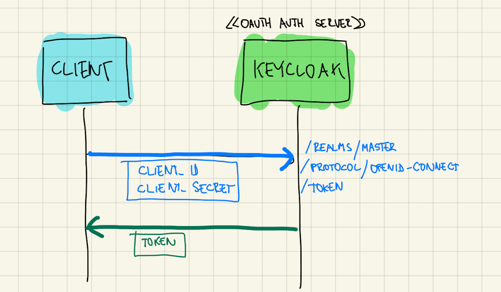
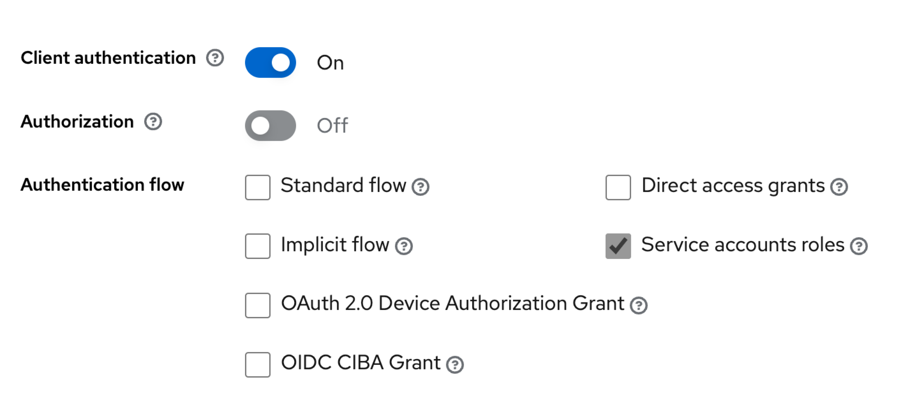
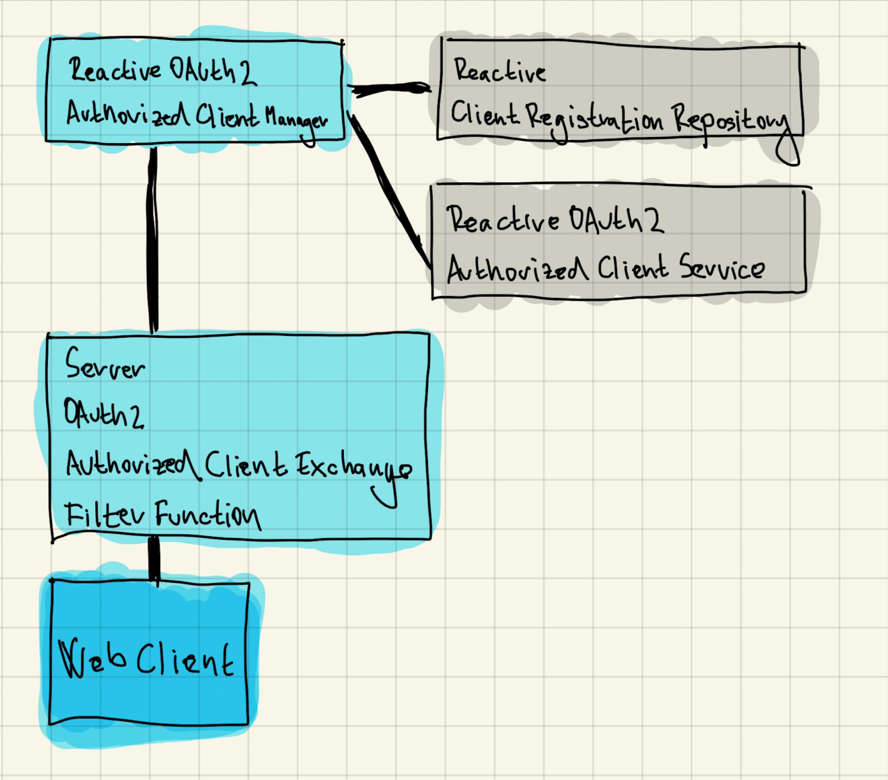

Ukážeme si ako použiť aplikáciu v Spring Boote ako OAuth klientku, ktorá sa autorizuje ako servisná aplikácia.
OAuth podporuje aj situácie, kde sa prístup k údajom udeľuje aplikáciám, ktoré nemajú používateľa. Obvykle ide o servisné aplikácie, démonov, monitoringy a podobne. V týchto aplikáciách neexistuje používateľ, ktorý by schvaľoval prístup k zdrojom — sama aplikácia sa považuje za vlastníka zdrojov.
Grant (flow) typu client_credentials slúži pre aplikácie, ktoré figurujú v dvojrole klienta (OAuth Client) i vlastníka zdrojov (OAuth Resource Owner).
|
Flow Client Credentials
Vo flowe figurujú len tri súčiastky:
-
Authorization Server: napríklad Keycloak
-
Client: je ním „servisná“ aplikácia.
-
Resource Server: napríklad REST API
| Klient je vždy dôverný (confidential), čiže má obvykle uzavretý kód, a dokáže starostlivo ochrániť tajomstvo Client Secret, ktoré sa považuje za citlivý údaj medzi ním a autorizačným serverom. |
-
Klient sa prezentuje svojim identifikátorom (Client ID) a klientskym tajomstvom (Client Secret).
-
Autorizačný server vráti token.
-
Klient sa pomocou tokenu autorizuje voči Resource Serveru.
| Klient kontaktuje priamo endpoint pre token. Kroky s endpointom pre autorizáciu sa v tomto flowe ignorujú. |

Registrácia klienta
Klienta zaregistrujeme v Keycloaku (autorizačnom serveri).
-
Vytvoríme nového klienta s identifikátorom
techbank. -
Zapneme autentifikáciu klienta (Client Authentication), pretože ide o dôverného klienta (confidential client).
-
Vypneme všetky flowy a ponecháme len Service accounts roles, čo zodpovedá grantu Client Credentials z OAuth 2.0.

Skúška správnosti
Ak je klient registrovanný, môžeme overiť flow.
Ukážka dopytu:
curl -X POST --location "http://localhost:8080/realms/master/protocol/openid-connect/token" \ (1)
-H "Content-Type: application/x-www-form-urlencoded" \ (2)
-d "grant_type=client_credentials" \ (3)
--basic --user techbank:E5wzwZqbFiH1Gwh2qou8O332yzJ5mj5g (4)| 1 | Požiadavku typu POST posielame na endpoint Keycloaku, ktorý vydá token. |
| 2 | Telo požiadavky sú formulárové údaje. |
| 3 | Používame flow typu Client Credentials. |
| 4 | Klient sa autentifikuje dvojicou Client ID a Client Secret, ktorá zodpovedá zaregistrovaným údajom v autorizačnom serveri Keycloak |
Odpoveďou bude prístupový token (access token). Ak používame OpenID Connect, token bude vo formáte JWT.
{
"access_token": "eyJh...",
"expires_in": 60,
"refresh_expires_in": 0,
"token_type": "Bearer",
"not-before-policy": 0,
"scope": "profile email"
}Token následne vieme priložiť ku volaniu resource servera, teda nejakého REST API.
http://localhost:9999/accounts/1/balance
Authorization: Bearer {{jwt}}Klient v Spring Boote
Klienta, ktorý sa bude pripájať k resource serveru postavíme na základe triedy WebClient, teda reaktívnom HTTP klientovi.
Použijeme závislosti:
-
Spring OAuth 2 Client:
spring-boot-starter-oauth2-client -
Spring WebFlux:
spring-boot-starter-webfluxs podporou pre reaktívne aplikácie
Konfigurácia aplikácie
Klient pre OAuth potrebuje konfiguráciu — identifikátor klienta, jeho tajomstvo, explicitne uvedený flow a adresu, kde je k dispozícii Keycloak.
spring.security.oauth2.client.registration.keycloak.client-id=techbank
spring.security.oauth2.client.registration.keycloak.client-secret=E5wzwZqbFiH1Gwh2qou8O332yzJ5mj5g
spring.security.oauth2.client.registration.keycloak.authorization-grant-type=client_credentials
spring.security.oauth2.client.provider.keycloak.issuer-uri=http://localhost:8080/realms/masterKonfigurácia klienta pre HTTP
Naša servisná aplikácia bude každých pár sekúnd pingať REST API na vzdialenom serveri — teda bude posielať jednoduchú požiadavku v HTTP.
Aby dokázala bežať dlho, priamo ju spustíme ako službu bežiacu nad reaktívnym serverom Netty, o čo sa postará Spring WebFlux.
Budeme potrebovať:
-
bean, ktorý bude udržiavať autorizovaný stav
-
HTTP klienta
WebClient -
funkciu, ktorá prepojí klienta s autorizačnými mechanizmami OAuth a bude automaticky posielať prihlasovacie požiadavky na Keycloak.

Bean pre autorizovaný stav
Trieda ReactiveOAuth2AuthorizedClientManager berie klientov, ktorí sú nakonfigurovaní v application.properties, dokáže ich autorizovať voči autorizačnému serveru, po úspešnej autentifikácii ich vyhlásiť za autorizovaných klientov a tento zoznam ukladať (perzistovať) do vhodného úložiska.
Keďže náš klient nepobeží v rámci webovej aplikácie — požiadavky cez HTTP budú vyvolávané autonómne, použijeme implementáciu AuthorizedClientServiceReactiveOAuth2AuthorizedClientManager.
Trieda má dve závislosti, ktoré nám Spring Boot WebFlux dodá automaticky:
-
zoznam klientov spravovaný
ReactiveClientRegistrationRepository. -
manažment autorizovaných klientov
ReactiveOAuth2AuthorizedClientService, ktorý dokáže na základe identifikátora klienta a autentifikácieAuthenticationposkytnúť autorizovaného klienta, a zároveň ich udržiavať v príslušnom úložisku.
@Bean
ReactiveOAuth2AuthorizedClientManager authorizedClientManager(
ReactiveClientRegistrationRepository clientRegistrations,
ReactiveOAuth2AuthorizedClientService authorizedClientService) {
return new AuthorizedClientServiceReactiveOAuth2AuthorizedClientManager(clientRegistrations, authorizedClientService);
}WebClient
Klienta pre HTTP prepojíme s autorizáciou.
Trieda ServerOAuth2AuthorizedClientExchangeFilterFunction integruje klienta pre HTTP (WebClient) s mechanizmami OAuth.
Spolupracuje s ReactiveOAuth2AuthorizedClientManager, ktorý rieši nízkoúrovňové technikálie.
Ak tieto tri triedy prepojíme, získame klienta WebClient, ktorý vie automaticky kontaktovať Keycloak, získať token, a priložiť ho k požiadavkam smerovaným na REST API.
OAuthConfiguration.java
@Bean
public WebClient webClientSecurityCustomizer(
ReactiveOAuth2AuthorizedClientManager authorizedClients) {(1)
var oAuthFilter
= new ServerOAuth2AuthorizedClientExchangeFilterFunction(
authorizedClients);(2)
oAuthFilter.setDefaultClientRegistrationId("keycloak");(3)
return WebClient.builder()
.filter(oAuthFilter) (4)
.build();
}| 1 | Ako závislosť si vyžiadame správcu autorizovaných klientov pre OAuth. Tú dostaneme v podobe beanu nakonfigurovaného v predošlom kroku. |
| 2 | Vytvoríme filter, ktorý sa postará o integráciu s OAuth. |
| 3 | Keďže filter beží autonómne, mimo požiadavky HTTP, musíme explicitne povedať, na ktorého klienta z application.properties sa táto konfigurácia vzťahuje. |
| 4 | Filter zapojíme do klienta WebClient. |
Integrácie
Od tejto chvíle môžeme automaticky používať klienta WebClient.
Ak chceme napríklad periodicky posielať dopyty na server:
-
zapneme anotáciu
@EnableScheduling, -
vyrobíme metódu s anotáciou
@Scheduled, -
automaticky nadrôtujeme klienta
WebClient, -
voláme požiadavky na resource server.
@Component
public class ScheduledBalanceChecker {
@Autowired
private WebClient webClient; (1)
@Scheduled(fixedDelay = 5, timeUnit = TimeUnit.SECONDS) (3)
public void checkBalance() {
int accountId = 1;
BigDecimal balance = webClient.get()
.uri("http://localhost:9999/accounts/{accountId}/balance", accountId)
.retrieve() (2)
.bodyToMono(BigDecimal.class)
.block();
logger.info("Account {} has balance {}", accountId, balance);
}
}| 1 | Necháme si automaticky nadrôtovať klienta pre HTTP požiadavky vrátane integrácie s OAuth. |
| 2 | Voláme klienta. |
| 3 | Periodicky zapneme volanie metódy. |
| V tomto prípade sa s každým volaním klienta získa nový token z autorizačného servera. V každej iterácii sa tak v skutočnosti vykonajú dva dopyty: jeden na autorizačný server a druhý na príslušné REST API v resource serveri. |
Záver
| Repozitár s kódom pre Spring Boot je k dispozícii na GitHube, v repozitáru novotnyr/bank-oidc-client-credentials. |